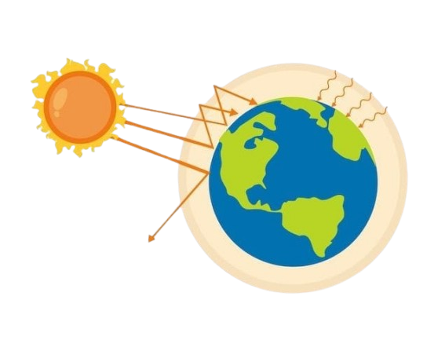

O que é o Aquecimento Global?
O aquecimento global é o aumento da temperatura média da Terra, causado principalmente pela ação humana. Entre as principais causas estão a queima de combustíveis fósseis (como carvão, petróleo e gás natural), o desmatamento e o excesso de poluição. 
Esses fatores liberam gases na atmosfera, como o dióxido de carbono (CO₂), que formam uma camada que retém o calor do Sol. Como consequência, temos efeitos como o derretimento das geleiras, ondas de calor mais intensas e secas prolongadas.
Um exemplo claro é o aumento dos incêndios florestais em lugares como a Amazônia e a Califórnia.
Exemplo de agravamento do aquecimento global
Para ilustrar o agravamento do aquecimento global, podemos olhar para a comparação entre as temperaturas médias globais de 2015 e 2025. Em 2015, a temperatura média global já estava cerca de 0,9°C acima dos níveis pré-industriais, uma evidência clara do impacto das emissões de gases de efeito estufa ao longo dos anos. Se não houver mudanças significativas nas políticas ambientais e de emissão de carbono, as projeções indicam que até 2025 a temperatura média global poderá aumentar ainda mais, chegando a 1,2°C a 1,5°C acima da média pré-industrial.
Este aumento não é apenas um número, mas está associado a efeitos tangíveis como:
- Derretimento das calotas polares;
- Aumento no nível do mar;
- Alterações nos padrões climáticos e eventos climáticos extremos, como furacões mais intensos e secas prolongadas.
Se esse padrão continuar, é esperado que o impacto sobre ecossistemas e sociedades se intensifique, com consequências mais graves para a biodiversidade, a agricultura e a qualidade de vida das populações em regiões vulneráveis.